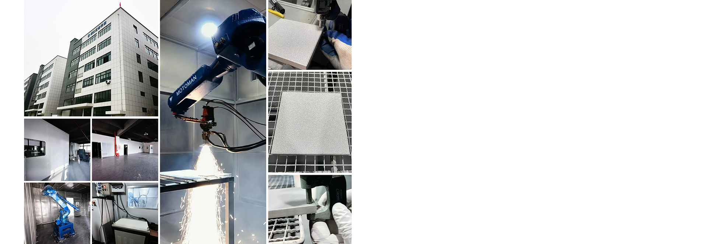

浙江庄誉科技有限公司
以真实工况为起点，以验证数据和过程记录推动功能性涂层稳定交付。

ABOUT ZHUANGYU
专注等离子溶射与表面改质
公司于 2021 年正式成立，相关业务始于 2015 年，位于杭州建德，聚焦高端设备核心部件的功能性涂层。
庄誉围绕防粘、绝缘、耐磨和耐刻蚀等需求，从工况分析、材料与工艺设计、样件验证到质量交付形成工作闭环。
对于公司地址、联系方式、资质证书、客户名称和具体项目数据，网站仅在获得确认后发布。
以真实工况为起点，以验证数据和过程记录推动功能性涂层稳定交付。

ABOUT ZHUANGYU
公司于 2021 年正式成立，相关业务始于 2015 年，位于杭州建德，聚焦高端设备核心部件的功能性涂层。
庄誉围绕防粘、绝缘、耐磨和耐刻蚀等需求，从工况分析、材料与工艺设计、样件验证到质量交付形成工作闭环。
对于公司地址、联系方式、资质证书、客户名称和具体项目数据，网站仅在获得确认后发布。